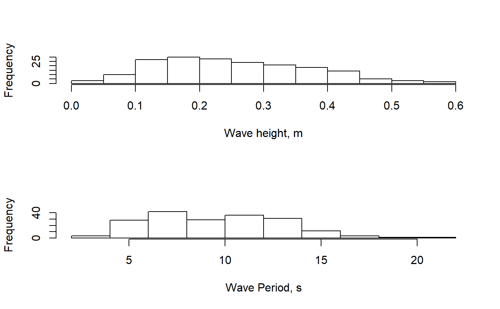

Calculate ocean wave summary statistics, including significant wave height and period.
waveStatsZC(data, Fs, threshold = NULL, plot = FALSE)
| data | A numeric vector of water surface height data. The data do not need to be detrended prior to use. Typical units = meters |
|---|---|
| Fs | Sampling frequency of the data, in Hz. |
| threshold | The minimum height necessary for a zero-crossing event to be considered a wave. |
| plot | Set to TRUE if summary histograms of wave heights and wave periods are desired. |
A list object containing summary statistic values.
Hsig Mean of the highest 1/3 of waves in the data set. Units =
same as input surface heights.
Hmean Overall mean wave height, for all waves (bigger than
threshold).
H10 Mean height of the upper 10% of all waves.
Hmax Maximum wave height in the input data.
Tmean Mean period of all waves (bigger than threshold).
Units = seconds.
Tsig Mean period of Hsig (highest 1/3 of waves).
Based on an upward zero-crossing algorithm originally provided by Urs Neumeier, v1.06. However, by default the algorithm is run as a downward zero-crossing process by inverting the data.
Original MATLAB function by Urs Neumeier: http://neumeier.perso.ch/matlab/waves.html
waveStatsSP for wave statistics determined using
spectral analysis methods.
#> $Hsig #> [1] 0.3870003 #> #> $Hmean #> [1] 0.2530191 #> #> $H10 #> [1] 0.4686878 #> #> $Hmax #> [1] 0.565325 #> #> $Tmean #> [1] 9.622973 #> #> $Tsig #> [1] 11.81855 #>